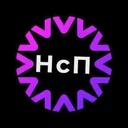

Авторские афоризмы о личности, обстоятельствах, уверенности и человеческом достоинстве.
03 / АФОРИЗМА2026 / ЗАПИСИ01 / ЛИЧНЫЙ ВЗГЛЯД

01 / ЛИЧНОСТЬ И ОБСТОЯТЕЛЬСТВА
«Если ты съел говно, это не значит, что ты говнистый человек. Иногда ты просто человек, который съел говно. Жизнь такова, главное — сохранить улыбку».
ПОЯСНЕНИЕ
Не позволяй отдельному событию становиться определением всей твоей личности.
02 / УВЕРЕННОСТЬ И МЕРА
«Если ты перданул на публике, не означает, что ты насрал им на жизнь. Иногда ты просто мимолётный влёт в их обстоятельства. Главное — быть уверенным, не забывая пердеть умеренно».
ПОЯСНЕНИЕ
Уверенность без меры превращается в бесцеремонность, а мера без уверенности — в постоянное самоограничение.
03 / ДОСТОИНСТВО И ОСКОРБЛЕНИЕ
«Попытка унизить человека не означает, что ты его победил. Иногда ты просто человек, который его оскорбил».
ПОЯСНЕНИЕ
Оскорбление не гарантирует, что ты задел его достоинство или добился превосходства. Иногда попытка унизить человека лишь демонстрирует твою собственную несдержанность и неспособность возвыситься иначе, кроме как за счёт обесценивания другого.